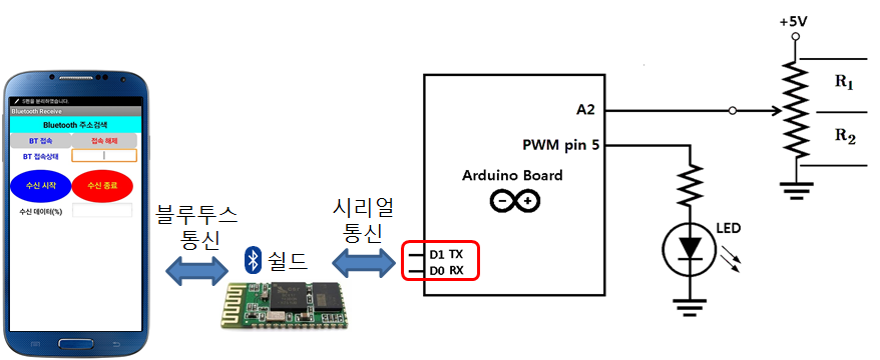

10m 거리이내사용가능

10m 거리이내사용가능
HC-05 모듈의 GND는 (브레드보드를 통해) Uno 보드의 GND에 연결
아두이노 보드는 블루투스 모듈과 시리얼 통신

안드로이드 스마트폰의 설정에서 연결가능한 블루투스 기기를 검색하여 아두이노 보드에 장착된 블루투스 모듈을 찾아 연결하고 활성화
1234로 입력하여 등록(페어링)

스마트 폰에는 PC가 시리얼 모니터를 통해서 그림과 같이 LED를 제어 할 수 있는 스위치 값을 전달했던 것처럼 스마트 폰에서도 시리얼 통신으로 전달할 스위치 값을 발생시켜 줄 엡(App)을 설치하여 사용

BT_ONOFFSW.apk를 설치하고, 블루투스 모듈이 장착된 아두이노 보드에 연결된 LED를 ON/OFF


int ledPin = 8; // 아두이노 보드의 디지털입출력 핀 8번에 LED연결
void setup( ) {
Serial.begin(9600); // BT 모듈의 통신 속도 9600bps 설정
pinMode(ledPin, OUTPUT); // 디지털입출력 핀 8번을 출력으로 설정
}
void loop() {
char r_data;
if (Serial.available( )> 0) { // BT 모듈을 통한 시리얼 통신 입력 발생 검사
r_data = Serial.read( ); // 시리얼 통신 문자 입력 값 저장, (시리얼 통신으로 수신되는 데이터의 타입이 문자형 임을 가정)
if( r_data == '1') { // 스마트 폰의 앱 “BT_ONOFFSW.apk”의 "Switch ON"이 터치될 때, 문자 '1'이 전송됨
digitalWrite(ledPin, HIGH); // LED 켜기
}
if( r_data == '2') { // 스마트 폰의 앱 “BT_ONOFFSW.apk”의 "Switch OFF"이 터치될 때, 문자 '2'가 전송됨
digitalWrite(ledPin, LOW); // LED 끄기
}
}
}보안상의 이유로 이 소스에서 가져온 알 수 없는 앱을 휴대전화에 설치할 수 없습니다.메시지가 나오면, 설정을 클릭한후
이 출처 허용을 활성화
6개의 기능 버튼이 있는 스마트 폰 App (BT_SW6.apk) 설치

이전 보드 연결 구성에서 다음 연결 추가
int ledPin[4] = {8,9,10,11};
int k, num;
char phoneData;
void setup( ) {
Serial.begin(9600);
for (k=0; k<4; k++) {
pinMode(ledPin[k], OUTPUT);
}
}
/*
SerialEvent occurs whenever a new data comes in the hardware serial RX. This
routine is run between each time loop() runs, so using delay inside loop can
delay response. Multiple bytes of data may be available.
*/
void serialEvent() {
phoneData = Serial.read( );
}
void loop() {
if (phoneData == '1') {
digitalWrite(ledPin[0], HIGH);
} else if (phoneData == '2') {
digitalWrite(ledPin[1], HIGH);
} else if (phoneData == '3') {
digitalWrite(ledPin[2], HIGH);
} else if (phoneData == '4') {
digitalWrite(ledPin[3], HIGH);
} else if (phoneData == '6') {
for (k=0; k<4; k++) {
digitalWrite(ledPin[k], LOW);
}
}
}보안상의 이유로 이 소스에서 가져온 알 수 없는 앱을 휴대전화에 설치할 수 없습니다.메시지가 나오면, 설정을 클릭한후
이 출처 허용을 활성화

BT_RCV1.apk설치
저항 값에 따라 LED 밝기 조절



int ledPin = 5; // 아두이노 보드의 PWM핀 5번에 LED연결
int vrVal; // 가변저항 값 저장을 위한 변수
int vrPercentage; // 가변저항 값을 100분율로 표시한 값을 저장하는 변수
int pwmVal; // 가변저항 값을 0~255사이의 값으로 변환한 값을 저장하는 변수
char select; //
void setup( ) {
Serial.begin(9600);
}
void serialEvent() {
select = Serial.read(); // 시리얼 통신 입력값이 있으면 읽어서 select 변수에 저장 (문자 '1' 혹은 '2' 중에 하나가 수신됨)
}
void loop() {
if (select == '1') { // 스마트 폰 엡에서 ‘수신 시작’ 명령 수신 (문자 '1'을 보냄)
vrVal = analogRead(2); // 아두이노 보드에 연결된 VR로 부터 값 입력
vrPercentage = map(vrVal, 0, 1023, 0, 100); // %값으로 변환
Serial.write(vrPercentage); // 블루투스를 이용한 시리얼 통신으로 스마트 폰에 값 전달
pwmVal = map(vrVal, 0, 1023, 0,255); // PWM 값으로 변환
analogWrite(ledPin,pwmVal); //VR값에 비례한 LED 밝기 표시
delay(1000);
}
if (select =='2') { // 스마트 폰 엡에서 ‘수신 종료’ 명령 수신 (문자 '2'을 보냄)
analogWrite(ledPin,0); // LED OFF
delay(20);
}
}소프트웨어적으로 시리얼 기능 사용
사용방법
소프트웨어 시리얼 함수 정의


#include <SoftwareSerial.h>
int rxPin=2;
int txPin=3;
SoftwareSerial BTSerial(rxPin,txPin); // 소프트웨어 시리얼 설정
int ledPin = 8; // 아두이노 보드의 디지털입출력 핀 8번에 LED연결
void setup( ) {
BTSerial.begin(9600); // BT 모듈의 통신 속도 9600bps 설정
pinMode(ledPin, OUTPUT); // 디지털입출력 핀 8번을 출력으로 설정
}
void loop() {
char r_data;
if (BTSerial.available( )> 0) { // BT 모듈을 통한 시리얼 통신 입력 발생 검사
r_data = BTSerial.read( ); // 시리얼 통신 문자 입력 값 저장, (시리얼 통신으로 수신되는 데이터의 타입이 문자형 임을 가정)
if( r_data == '1') { // 스마트 폰의 앱 “BT_ONOFFSW.apk”의 "Switch ON"이 터치될 때, 문자 '1'이 전송됨
digitalWrite(ledPin, HIGH); // LED 켜기
}
if( r_data == '2') { // 스마트 폰의 앱 “BT_ONOFFSW.apk”의 "Switch OFF"이 터치될 때, 문자 '2'가 전송됨
digitalWrite(ledPin, LOW); // LED 끄기
}
}
}